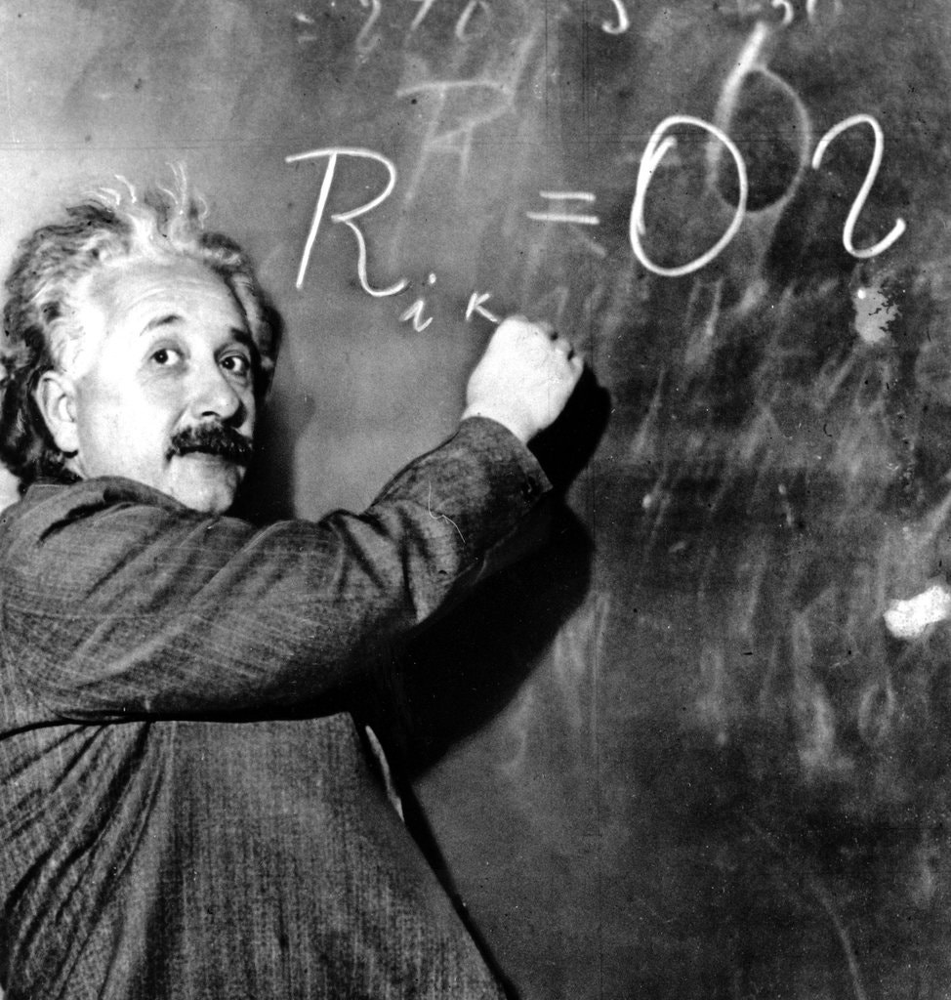

Albert Einstein
a German-born theoretical physicist who developed the theory of relativity

While Einstein was lecturing
Here is a timeline of Albert Einstein's life:
- 1879: Albert Einstein is born in Ulm, Germany
- 1885: Einstein enrolls in the second grade of a Catholic elementary school called the Petersschule. He receives Jewish religious instruction at home and also begins taking violin lessons
- 1888: Einstein is accepted at the Luitpold Gymnasium
- 1894: Einstein drops out of the Luitpold Gymnasium
- 1895: After failing the entry exam for the Zurich Polytechnic, Einstein is accepted to the trade department of the cantonal school in Aarau, Switzerland. He lives with the family of Jost Winteler, a teacher in Aarau.
- 1895: After failing the entry exam for the Zurich Polytechnic, Einstein is accepted to the trade department of the cantonal school in Aarau, Switzerland. He lives with the family of Jost Winteler, a teacher in Aarau.
- 1896: Einstein begins studying at the Zurich Polytechnic in a teachers' training program
- 1900: Einstein receives his diploma as a mathematics teacher and starts work on his doctoral thesis
- 1901: Einstein officially becomes a Swiss citizen
- 1902: Einstein is hired as a patent officer in Bern
- 1905: Einstein completes his paper on quantum theory
- 1906: Einstein receives his doctorate from the University of Zurich
- 1912: Einstein is appointed professor of theoretical physics at the Zurich Polytechnic
- 1919: Einstein and Mileva obtain a divorce
- 1919: Einstein marries his cousin Elsa in Berlin
- 1922: Einstein wins the Nobel Prize for his work on quantum theory
- 1933: Einstein moves to the United States with his wife and his secretary Helen Dukas
- 1940: Einstein becomes an American citizen
- 1955: Einstein dies in New Jersey. His body is cremated and his papers turned over to the Hebrew University in Jerusalem
Imagination is more important than knowledge.
Albert Einstein